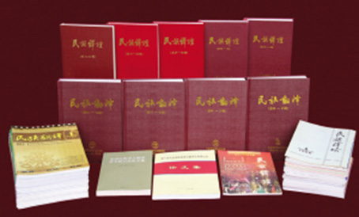

孜孜以求，将翻译艺术探索到底
2015年12月11日 来源：《中国民族报》

《民族翻译》学术期刊
翻译是一门学问，是一门艺术，其中奥妙无穷。作为专门从事民族语文翻译的国家机构，中国民族语文翻译局一直致力于翻译业务研究，构建翻译学术平台，从而提高翻译的水准。
2001年4月，中国民族语文翻译局研究室成立，目的是以研究成果促翻译实践和学术交流。
据研究室主任洛松泽仁介绍，翻译局以前在民族语文基础理论研究方面申请的项目较少，研究室成立后已申请了国家民委《新形势下科学保护各民族语言文字工作理论与政策研究》、《全国少数民族语言文字使用情况调查》、《民族语文政策法规汇编》等项目。
研究室以本室人员为主，又吸收了中央民族大学和中国社会科学院的专家学者，共同完成了这些课题。
研究室内，还设有一个质疑组。7个语种翻译人员在翻译过程中只要遇到不能确定的词汇意义或文句内涵，都会反馈到质疑组，由工作人员与专家学者协商研究，确定最后的翻译方法，这大大提高了翻译局各文室的翻译效率。
搞研究，要有平台和抓手，而《民族翻译》就是这个平台。作为国内唯一公开发行的民族翻译类专业期刊，《民族翻译》虽然一年只出4期，却因有丰富的前沿研究成果而被民族语言翻译学术领域所看重。作为《民族翻译》的编辑部门，研究室在选择论文时进行了许多尝试。
“比如，我们不仅刊登少数民族语言翻译类论文，每期还会刊登三至四篇英语翻译类论文。因为国外翻译理论相对比较成熟，可以从思路和方法上为少数民族语文翻译提供可贵的经验。”洛松泽仁说。
此外，《民族翻译》还注意刊发一些傣语、佤语、哈尼语等小语种的相关论文，尽可能地扩大研究范围。现在，《民族翻译》正在朝着办成双月刊的方向努力，以期为民族语言翻译界的专家学者提供一个更广阔的交流平台。
研究室承担的另一项重要任务，是中国翻译协会民族语文翻译委员会的日常工作。据介绍，中国翻译协会民族语文翻译委员会自1985年成立以来，每两年要召开一次全国民族语文翻译学术会议，并将会议的论文结集出版。研究室承担了会议的具体组织工作，以便让来自全国各地的语言翻译研究者能够聚集一堂，集思广益，共同探讨民族语文翻译的发展态势和面临的问题，促进民族语文翻译事业的发展与进步。
从2004年开始，由研究室负责的民族语文翻译委员会，已先后4次向中国翻译协会推荐了208位各民族的资深民族语文翻译家。“他们之中有很多人从事民族语文翻译工作三四十年了，能够获得中国翻译协会的肯定，既是对他们的鼓励，也可以为民族语言翻译领域树立行业标杆。”洛松泽仁说。